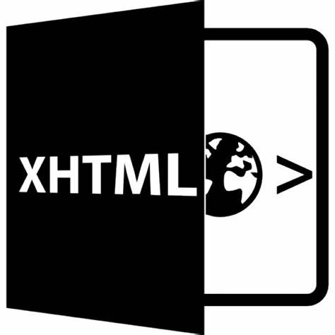
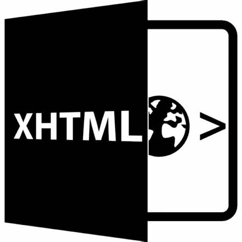

- DEFINICION DE HTML Y XHTML.
XHTML es una sigla de la lengua inglesa que procede de la expresión Extensible Hypertext Markup Language. En nuestro idioma, dicha frase puede traducirse como Lenguaje de Marcado de Hipertexto Entendido.
Estas ideas pertenecen al ámbito de la informática y se vinculan específicamente con Internet. El XHTML es un lenguaje que adapta el HTML al XML. Dicho de otro modo: se trata de una adaptación del lenguaje HTML para que sea compatible con el lenguaje XML.
Como se puede apreciar, para saber qué es el XHTML, es necesario entender a qué se refieren los conceptos de HTML y XML.
HTML es un lenguaje de marcado que se utiliza para el desarrollo de páginas de Internet. Se trata de la sigla que corresponde a HyperText Markup Language, es decir, Lenguaje de Marcas de Hipertexto, que podría ser traducido como Lenguaje de Formato de Documentos para Hipertexto.
Se trata de un formato abierto que surgió a partir de las etiquetas SGML (Standard Generalized Markup Language). Concepto traducido generalmente como «Estándar de Lenguaje de Marcado Generalizado» y que se entiende como un sistema que permite ordenar y etiquetar diversos documentos dentro de una lista. Este lenguaje es el que se utiliza para especificar los nombres de las etiquetas que se utilizarán al ordenar, no existen reglas para dicha organización, por eso se dice que es un sistema de formato abierto.
TEMAS DEL ARTICULO
- Para qué sirve el HTML.
- Marcado estructural y presentaciona
- Breve historia del HTML.
- La primera descripción
Para qué sirve el HTML
EL HTML se encarga de desarrollar una descripción sobre los contenidos que aparecen como textos y sobre su estructura, complementando dicho texto con diversos objetos (como fotografías, animaciones, etc).
Es un lenguaje muy simple y general que sirve para definir otros lenguajes que tienen que ver con el formato de los documentos. El texto en él se crea a partir de etiquetas, también llamadas tags, que permiten interconectar diversos conceptos y formatos.
Para la escritura de este lenguaje, pues, se crean las etiquetas que aparecen especificadas a través de corchetes o paréntesis angulares: < y>. Entre sus componentes, los elementos dan forma a la estructura esencial del lenguaje, ya que tienen dos propiedades (el contenido en sí mismo y sus atributos).
Por otra parte, cabe destacar que el HTML permite ciertos códigos que se conocen como scripts, los cuales brindan instrucciones específicas a los navegadores que se encargan de procesar el lenguaje. Entre los scripts que pueden agregarse, los más conocidos y utilizados son JavaScript y PHP.
Marcado estructural y presentacional
El marcado estructural es el que estipula la finalidad del texto, aunque no define cómo se verá el elemento. El marcado presentacional, por su parte, es el que se encarga de señalar cómo se verá el texto más allá de su función.
Para conocer el código HTML que utiliza una página web, hay que seleccionar Ver código fuente en nuestro navegador (como Internet Explorer o Mozilla Firefox). Al elegir esta opción, se abrirá el editor de texto con el código HTML de la página que se está visualizando.
Breve historia del HTML
Este lenguaje fue desarrollado por la Organización Europea de Investigación Nuclear (CERN) en el año 1945 con la finalidad de desarrollar un sistema de almacenamiento donde las cosas no se perdieran, que pudieran ser conectadas a través de hipervínculos. Primeramente crearon un dispositivo llamado «memex», el cual era considerado como un suplemento para la memoria.
Posteriormente, Douglas Engelbart, diseñó un entorno de trabajo por computadora que recibiría el nombre de oNLine System que poseía un catálogo para facilitar la tarea de búsqueda dentro de un mismo organismo. Recién en 1965, Ted Nelson acuñó el término hipervínculo, ideando una estructura que se encontraba conectada de forma electrónica y que más tarde permitiría la creación de la World Wide Web (1989), un sistema de hipertexto a través del cual era posible compartir una variada información sirviéndose de Internet (servía para la comunicación entre investigadores nucleares que formaran parte del CERN).La primera descripción
El norteamericano Tim Berners-Lee fue el primero en proponer una descripción de HTML en un documento que publicó en 1991. Allí describía veintidós componentes que suponen el diseño más básico y simple del HTML.
El tipo de codificación que se utilizó para el desarrollo de este sistema de hipervínculos debía ser comprendido, tanto por ordenadores tontos como por mega-estaciones, por eso fue necesario crear uno absolutamente simples, tanto en lo que respectaba al lenguaje de intercambio (HTML), como el que hacía referencia al protocolo de red (HTTP).
Al día de hoy existen los Editores Web que permiten que los diseñadores, a través de herramientas gráficas que reciben el nombre de WYSIWYG puedan crear páginas web sin conocer el código html, este se crea de forma automatizada, dándole estructura a la web y permitiendo que sea más allá del ordenador donde es creada. Entre los recursos que pueden enlazarse al código HTML se encuentran fotografías, vídeos, archivos de otras webs o incluso de la misma y todo tipo de contenido que se encuentre subido a la red.